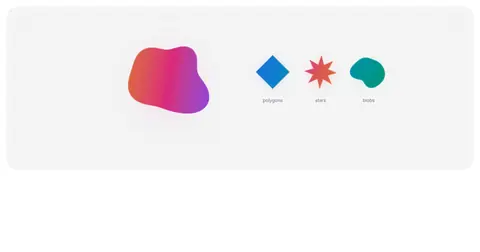

A Framer-Motion-style animation engine for Rust
The engine under every glowkit animation, exposed for your own UI: springs, keyframes, GSAP-style timelines, variants with stagger, enter and exit presence, FLIP layout animation, shared elements, drag with inertia and snapping, scroll-linked values, motion paths and shape morphing.
All Motion Engine components

Spring Playground
Motion EngineTune stiffness, damping and mass and watch a ball spring after the pointer (or a hopping target), with its step response plotted live.
Easing Visualizer
Motion EngineEvery classic easing curve plotted with a dot riding along it, so you can feel the difference.
Keyframes
Motion EngineValues passing through several stops with per-segment easing, infinite repeats, yoyo vs mirror, and repeat delays.

Timeline
Motion EngineA GSAP-style timeline: tweens sequenced with relative positions, labels and overlaps; play, pause, reverse, change speed or scrub.
Motion Box
Motion EngineA container like motion.div: enter from initial props, hover and tap states, and spring to new targets. Its children stay fully interactive.
Variants & Stagger
Motion EngineSwitch one variant name and every child follows, staggered one after another (from the first, or from the center outward).
Presence
Motion EngineContent that animates out before it disappears: auto-dismissing toasts and a keyed list where items enter, exit and the rest slide into place.

Layout Animation
Motion EngineItems glide between layouts (grid ↔ list, shuffle) instead of jumping: FLIP-style layout animation keyed by identity.
Shared Element
Motion EngineA thumbnail expands into a detail view and back: the same key used in two places animates between them (layoutId).
Drag & Snap
Motion EngineThrow a puck around with momentum and elastic edges, snap a knob to stops along an axis, and pull a card that springs home.
Reorder List
Motion EngineDrag rows to reorder them; the others slide out of the way and the dragged row lifts above them.
Scroll-Linked Motion
Motion EngineA progress bar tied to scroll position, parallax layers at different speeds, values mapped with transform(), and cards that animate in when scrolled into view.
Motion Path
Motion EngineObjects travel along a smooth path, turning to follow its tangent, with a comet trail and a staggered convoy.
Path Drawing
Motion EngineAny polyline drawn progressively with a gradient stroke and a glowing pen tip, then erased: like animating SVG pathLength.
Lanyard
Motion EngineAn ID badge hanging on a strap simulated with a verlet rope. Grab it, swing it, fling it.

Shape Morph
Motion EngineOutlines morph smoothly between circle, square, star, heart and blob: resampled, aligned and interpolated point by point.
Spring Chain
Motion EngineA follow-the-leader chain of springs: each dot chases the one in front, making whippy trails behind the pointer.